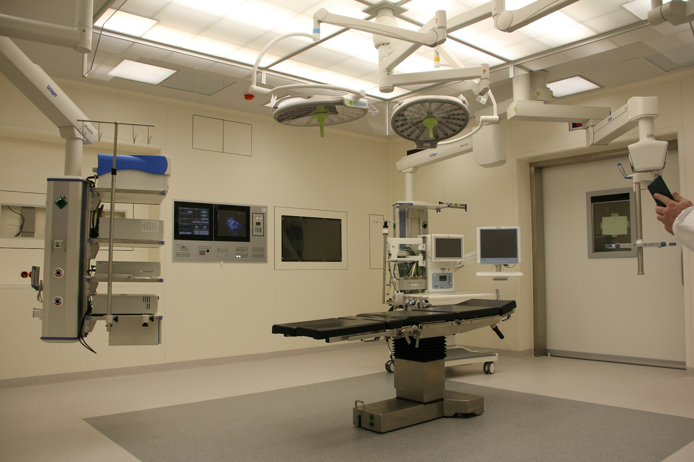

01
01Comprender las bases
El marco teórico organiza las tecnologías, los grupos de interés y el alcance del análisis.
ExplorarINVESTIGACIÓN MÉDICA / ESTADOS UNIDOS
Tecnología, información y personas. Una investigación sobre las herramientas digitales que transforman la comunicación hospitalaria.

SALUD × TECNOLOGÍAEL ENFOQUE / SALUD DIGITAL
La tecnología hospitalaria no se limita a los equipos médicos. También está presente en los canales que conectan a las personas con la información y los servicios de salud.
Esta investigación aborda inteligencia artificial, telesalud, aplicaciones móviles y portales de pacientes desde la comunicación y la organización hospitalaria. Su evidencia específica corresponde a hospitales oncológicos estadounidenses.
Una muestra concreta. Tres criterios digitales disponibles.
Porcentaje de cumplimiento de criterios digitales en 100 hospitales oncológicos. Análisis del 17 de septiembre al 24 de octubre de 2023. Fuente: Marco teorico de la Gabriela.docx.
01El marco teórico organiza las tecnologías, los grupos de interés y el alcance del análisis.
ExplorarEl dashboard permite comparar los tres porcentajes disponibles sin atribuirles efectos clínicos no medidos.
Explorar 03
03Las propuestas se presentan como acciones sugeridas, todavía sin implementación ni resultados comprobados.
Explorar